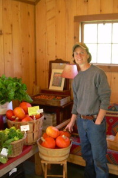
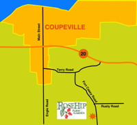
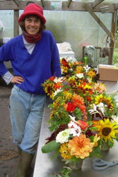

Welcome to RoseHip Farm and Garden
Organically grown produce on Whidbey Island since 1999
About Us
RoseHip Farm & Garden was started in 1999 by owners Linda Bartlett and Valerie Reuther. Formerly a plant nursery with a destination display garden, RoseHip features beautiful food grown in a garden setting surrounded by stunning flowering trees, shrubs and perennials where diversity and color abound.
Set on a historic property within Ebey’s Landing National Historic Reserve with the house and barn dating from the 1890’s, the gardens are an oasis of beauty and biodiversity where bees, birds, plants and people thrive. Our mission is to grow delicious and nutritious food and flowers in a manner that closely mimics Mother Nature with respect and stewardship of the land and those who work it.
Sustainable Food
We believe in a local and sustainable food system producing food for our local community without the use of harmful chemicals and pesticides. We focus on producing healthy soil through composting, cover crops, minimal tillage, and crop rotations. Healthy soil produces healthy, delicious, nutrient-dense crops.
Everyone deserves to have access to fresh, healthy produce regardless of income which is why we are committed to providing food for the local food-bank, Gifts From The Heart, in addition to the market customers we serve. We strive to "be the change we wish to see in the world".
|
 Linda Bartlett |
 Location Click to enlarge |
 Valerie Reuther |
{kind=link}